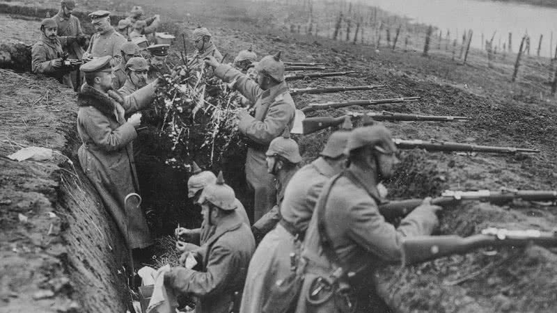
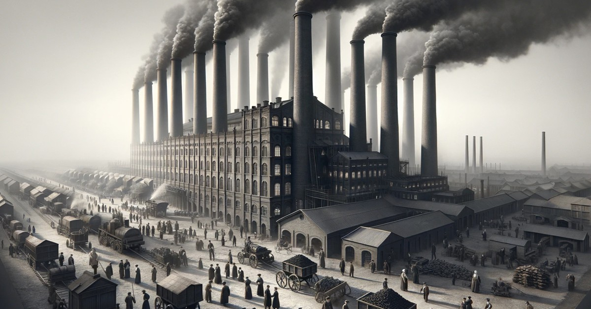
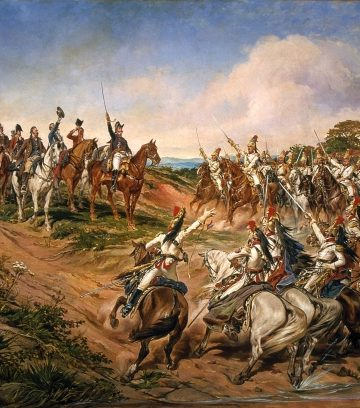

História é a ciência que estuda o passado da humanidade. Ela investiga os acontecimentos, as pessoas e as ideias que moldaram o mundo em que vivemos. A história é importante para entendermos o presente e para construirmos um futuro melhor.
A palavra "história" vem do grego "historia", que significa "conhecimento através da investigação". A história é, portanto, uma ciência que investiga o passado da humanidade. Ela estuda os acontecimentos, as pessoas e as ideias que moldaram o mundo em que vivemos.
"A História Geral é a história de toda a humanidade e está dividida em períodos. Inicia-se por volta de 300 mil anos, quando os primeiros Homo sapiens surgiram na África. Durante mais de 200 mil anos, o modo de vida dos primeiros seres humanos foi pouco foi alterado. Por volta de 3500 a.C., surgiram os primeiros sistemas de escrita e, assim, tradicionalmente, encerra-se a Pré-História e se inicia a Idade Antiga.
Na Antiguidade, diversas civilizações foram desenvolvidas, como a egípcia, a chinesa, a indiana e as mesopotâmicas. Grécia e Roma desenvolveram a democracia, o sistema republicano e diversas tecnologias que ainda hoje são utilizadas por nós. Após a queda do Império Romano, teve início a Idade Média, marcada pela fragmentação política, a diminuição do comércio de longa distância e o predomínio do sistema feudal.
Com a tomada de Constantinopla pelos turcos, em 1453, iniciou-se o Período Moderno, marcado pelas grandes navegações, a reforma protestante e o renascimento. A centralização política originou os Estados modernos. Em 1789, ocorreu a Revolução Francesa, que marcou o declínio da nobreza e a ascensão política da burguesia. A revolução marcou o início da Idade Contemporânea, período no qual vivemos.
A ideia de uma História Geral foi elaborada, no século XIX, por historiadores que valorizaram a história europeia em detrimento da história dos outros continentes. Por esse motivo, a História Geral recebe críticas de historiadores da atualidade que a consideram eurocentrista."
Principais fatos históricos
Rev Farropilha 20 de setembro de 1835 Primeira Guerra Mundial 28 de julho de 1914Revolução Russa 8 de março de 1917  Primeira Revolução Industrial: de 1760 até meados de 1850Rev Francesa 5 de mai. de 1789Segunda Guerra mundial 1 de Setembro de 1939Idade Média 476 d.C. e 1453 d.C.  Indepêndencia do Brasil 7 de setembro de 1822
"A história é absolutamente fundamental para um povo. Quem não sabe de onde vem, não sabe para onde vai"
Penso que a história é tão importante e tão presente , que podemos sentir, como um personagem em nossas vidas.
Ela é atual , a frente de seu tempo , revolucionária...
Quando lembramos de instruções de séculos atrás , que usamos hoje como fundamentos no direito( código hamurabi )
Ou a Revolução Francesa, com sua noção de direita e esquerda, que muito é ultizada por nós.
São tantas revoluções que impulsionaram a história e nos trouxeram até a era da tecnologia.
O conhecimento histórico auxilia o homem a compreender o que ele construiu ao longo de sua existência e o que as sociedades legaram em termos intelectuais, culturais e materiais.

 Rev Farropilha 20 de setembro de 1835
Rev Farropilha 20 de setembro de 1835 Revolução Russa 8 de março de 1917
Revolução Russa 8 de março de 1917 Rev Francesa 5 de mai. de 1789
Rev Francesa 5 de mai. de 1789 Segunda Guerra mundial 1 de Setembro de 1939
Segunda Guerra mundial 1 de Setembro de 1939 Idade Média 476 d.C. e 1453 d.C.
Idade Média 476 d.C. e 1453 d.C.